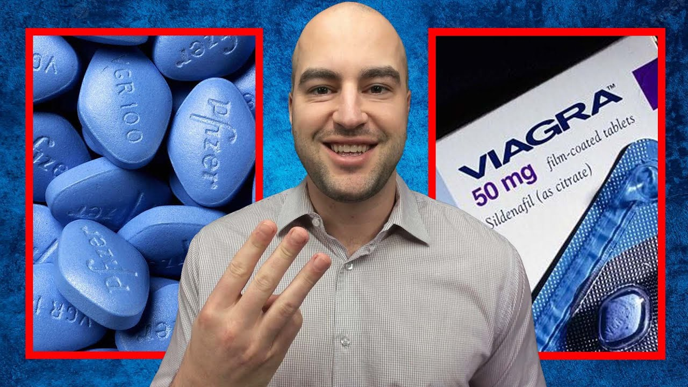
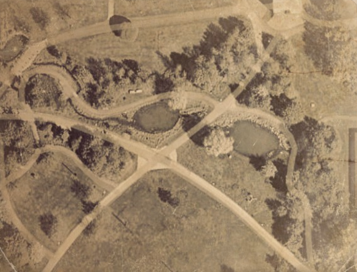
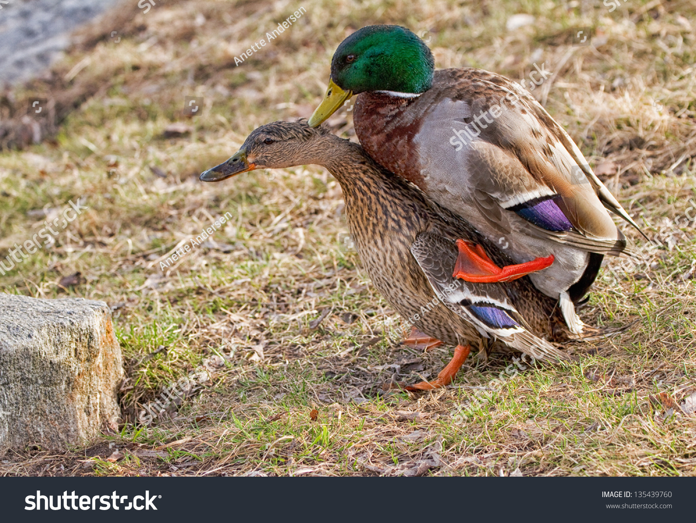

Sanningen bakom viagraparken
Vi känner alla till viagraparken, med sin ståtliga prakt och närhet till campus är det en klassiker för alla studenter. Man vandrar genom den på väg till Lambohov, eller så kanske man väljer att stanna där för att titta på de fina statyerna. Men har du någonsin undrat vart namnet kommer ifrån? Det skall vi nu dyka djupare ner i.
Bakgrund
Det hela börjar på TBI-sektionen 1984. Tre studenter, här kallar vi dem Kalle, Susan och Fredrik (deras riktiga namn nämns inte för deras egen säkerhet). De var inne på sitt 5:e år och det var dags att välja examensarbete. De tre studenterna hade en något unik idé till sitt arbete. De var intresserade av det minskande barnafödandet i många europeiska länder och funderade på sätt att motverka detta. Efter en lång kväll av brain storming kom Kalle plötsligt på den briljanta idén att använda viagra för att öka barnafödandet. Problemet var bara att testning av medicinska preparat kräver extremt kontrollerade former och lämpar sig därför inte till ett examensarbete. Men de tre studenterna var inte redo att ge upp. De ringde runt till flera djurparker, kliniker, mm. för att fråga om det fanns djur som de kunde testa sin idé på. Dessvärre fick de nedslag på sin idé, vilket kunde (och borde) ha varit slutet på deras projekt...
En ny idé
Efter att ha fått sitt 7e nedslag var studenterna redo att ge upp. Men då fick Susan en idé. Varför inte ta saken i egna händer? Vid tidpunkten promenerade Susan ofta genom den då kallade studentparken. En dag när hon spankulerade längst stigarna fick hon syn på en hop gräsänder. När hon såg dem sprang hon raka vägen till sina vänner för att berätta om sin briljanta idé. Varför inte testa på gräsänderna som ändå bodde så nära campus? På så sätt kunde de enkelt hålla koll på och följa experimentets fortskridande. Förslaget accepterades genast av Kalle och Fredrik och de började sätta sin plan i rullning.
Början på slutet
Studenterna behövde fortsätta med projektet i största hemlighet. För handledaren berättade de att de hittat ett företag som var villig att tillhandahålla djur för deras tester. De de inte berättade var att de i själva verket utan tillstånd hade planer på att testa på de lokala gräsänderna. De införskaffade en stor mängd viagra genom att en och en besöka flera apotek runt om Linköping för att ingen skulle misstänka något. När de hade införskaffat medicinen dumpade de systematiskt den tablett för tablett i dammen. Efter bara några timmer märkte de av resultat. Ivriga antecknade dem ner sina observationer och gick och la sig glada den natten. Det de inte visst var att de precis begått det största misstaget i deras liv...
Incidenten 1985
Till en början gick experimentet bra. Populationen gräsänder verkade öka, vilket var i linje med deras tes. Det som dock inte verkade stämma var att ökningen av gräsänder ökade mer och mer ju längre in på våren de kom. Enligt deras beräkningar borde viagran har minskat med 70% tills nu, men ingen effekt av dess minskning kunde observeras. Studenterna började nu bli oroliga. Till en början var det ett fåtal änder, i april var det ett tiotal. Men redan i början av maj var det redan ett 20-tal gräsandsfamiljer. Det värsta var dock inte änderna i sig, utan att viagran hade fått de att konstant ligga med varandra. Det gjorde att övriga besökare till parken snabbt kände sig otroligt obekväma, och det dröjde inte länge för ens parken fick sitt moderna namn: Viagraparken.
Polisens inblandning
I början på Juni hade problemet blivit så allvarligt att ledningen för universitet behövde rycka in och göra något. De ringde hit diverse experter på djurfortplantning för att ta reda på vad det var som försegick igentligen. Det dröjde inte länge för ens tester av vattnet hanterats av laboratoriumet och existensen av främmande preparat blev ett faktum. Polisen blandades in och det dröjde inte länge för ens handledaren för de tre studenterna började misstänka sina elever. Det är lite olklart hur det hela löste sig, men enligt polisens egna dokumment lades förundersökningen ner på grund av "bristfälliga bevis". Troligen listade universitetet ut att de var de tre studenterna som låg bakom problematiken och försökte därför tysta ner det hela för att det då relativt nya universitetet inte skulle hamna i blåsväder. Det är också därför det idag är otroligt svårt att hitta information om händelsen. Alla spår från examensarbetet har rensats från LiU:s arkiv och det enda sättet att hitta information om det är via intervjuer av studenterna samt läsa polisens egna dokumment.
Slutet
Det är fortfarande inte känt varför viagran hade så stor effekt som den hade. Vissa hävdar att det var något ämne i vattnet som vid beblandning med viagran förhöjde dess effekter. Andra tror att viagrans effekt var minimal och att det i själva verket bara råkade migrera många änder just till den parken just den våren. Men en sak är säker. Viagrans effekt var onekligen potent och studenter än idag går ibland till parken för att dricka av dess vatten, och om ryktet stämmer, ska effekten vara kvar än idag.
Källor
Vi har valt att inte ha med källor till denna text efter som att detta allvarligt skulle kunna försätta personerna i texten i omedelbar fara. För mer information, skicka ditt brev till: KOMMINISTERGÅRDEN LANDERYD, 585 93 Linköping